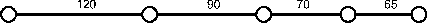

Programmierparadigmen
Aufgaben
1 Teil 1 (5. Semester)
1.1 Aufgabe (SEND-MORE-MONEY)
Lösen Sie das SEND-MORE-MONEY-Problem aus der Vorlesung (Aufgabe: Mehr Geld bitte!) in einer Programmiersprache Ihrer Wahl! Beachten Sie Nebenbedingungen.
1.2 Aufgabe (Beweis Pkw-Motorräder-Problem)
Führen Sie für das Pkw-Motorräder-Problem aus der Vorlesung den dort verlangten Beweis!
1.3 Aufgabe (Entwurfsvorschrift I)
Schreiben Sie gemäß Entwurfsvorschrift I den Vertrag, die Zweckbestimmung für eine Funktion auf, die den Rauminhalt eines Quaders berechnet, für den Länge, Breite und Höhe gegeben ist. Formulieren Sie drei Beispielanwendungen als Tests, die das Verhalten der Funktion veranschaulichen.
1.4 Aufgabe (Entwurfsvorschrift I)
- Eine Funktion, die aus der Entfernung und der Geschwindigkeit zweier Züge die Zeit ermittelt, nach der die Züge sich treffen, wenn Sie sich auf einem gemeinsamen Streckenabschnitt von ihren jeweiligen Startpunkten aus aufeinander zu bewegen.
- Eine Funktion, die aus einem gegebenen Anfangskapital, einem Jahreszinssatz und einer in Monaten gemessenen Laufzeit das Endkapital ermittelt. Die Zinsgutschrift erfolgt einmalig am Ende der Laufzeit. Während der Laufzeit gibt es weder Einzahlungen noch Abhebungen.
Eine Funktion, die aus der Länge und Breite eines rechteckigen Fußbodens, die Anzahl der benötigten Fliesen berechnet, deren Größe ebenfalls durch Länge und Breite gegeben ist.
Hinweis: Der Funktionsaufruf
(Math/ceil x)liefert die/ kleinste ganze Zahl, die größer als x ist.
1.5 Aufgabe (Bedingte Funktionen)
Schreiben Sie ein Programm, das aus dem Bruttoeinkommen eines Arbeitnehmers, das sich aus der Anzahl der Arbeitsstunden und seinem Bruttostundenlohn ergibt, sein Nettoeinkommen durch Abzug der Einkommensteuer berechnet. Die Einkommensteuer wird dabei nach einem steuererklärungaufbierdeckelgeeigneten Tarif ermittelt, der folgendermaßen definiert ist:
| Einkommen | Steuersatz [%] |
|---|---|
| \(<= 5000\) | 0 |
| \(> 5000\) und \(\leq 10000\) | 15 |
| \(>10000\) und \(\leq 100000\) | 29 |
| \(>100000\) | 64 |
Der Steuersatz gilt immer nur für die Einkommensanteile in dem jeweiligen Intervall.
Die Funktion nettoeinkommen soll nach folgendem Schema aufrufbar sein:
(nettoeinkommen anzahlArbeitsStunden stundenLohn)
Hier noch ein paar Testvorgaben:
(deftest test-nettoeinkommen (is (= (/ 500085 100) (nettoeinkommen 1 5001))) (is (= (/ 925071 100) (nettoeinkommen 1 10001))) (is (= (/ 7315036 100) (nettoeinkommen 1 100001))))
Hinweise:
- Lesen Sie den Aufgabentext aufmerksam durch. Jeder Satz bedeutet etwas.
- Entwickeln Sie die Funktion gemäß Entwurfsvorschrift II. Benutzen Sie Hilfsfunktionen und machen von Variablendefinitionen Gebrauch.
- Um das Rechnen mit inexakten Zahlen zu vermeiden, geben Sie Steuersätze nicht als Gleitkommazahlen wie 0.29 sondern als rationale Zahlen ein. In diesem Beispiel: (/ 29 100)
1.6 Aufgabe (Datenstrukturen)
Gehen Sie für die Lösung der Aufgabe nach Entwurfsvorschrift III vor!
Definieren Sie eine Datenstruktur für „Zeitpunkte seit Mitternacht”, die aus den Komponenten
stunden,minutenundsekundenbesteht.Entwickeln Sie eine Funktion
zeit->sekunden, die eine Zeitpunkt-seit-Mittnacht-Struktur verarbeitet und die seit Mitternacht vergangenen Sekunden berechnet.
Definieren Sie geeignete Datenstrukturen für Kreise, die durch
- die Koordinaten des Mittelpunkts und
- den Radius und
gegeben sind.
Schreiben Sie eine Funktion, die prüft, ob ein Punkt innerhalb eines Kreises liegt.
1.7 Aufgabe (gemischte Daten)
Ein Mitarbeiter ist entweder
- ein Festangestellter oder
- ein Werkstudent
Ein Festangestellter wird definiert durch
- seinen Namen,
- sein Grundgehalt,
- die im letzten Monat geleisteten Arbeitsstunden.
Ein Werkstudent wird definiert durch
- seinen Namen,
- seinen Stundenlohn,
- die im letzten Monat geleisteten Arbeitsstunden.
Definieren Sie unter Berücksichtigung von Entwurfsvorschrift IV
- geeignete Datenstrukturen für Mitarbeiter,
- eine Funktionsschablone für Funktionen, die Mitarbeiter verarbeiten.
Entwickeln auf der Grundlage dieser Schablone eine Funktion, die den Bruttomonatslohn eines Mitarbeiters berechnet. Bei Festangestellten berechnet sich der Monatslohn aus dem Grundgehalt zuzüglich Überstundenentgelt. Überstunden sind die über die monatliche Sollarbeitszeit (die als globale Konstante definiert wird) hinausgehenden Arbeitsstunden. Der Stundenlohn pro Überstunde berechnet sich aus dem Grundgehalt und der monatlichen Sollarbeitszeit plus \(25\%\). Minderstunden bleiben unberücksichtigt.
1.8 Aufgabe (elementare Ausdrücke über Listen)
Werten Sie die folgenden Funktionsaufrufe aus:
| Nr. | Ausdruck | Lösung |
|---|---|---|
| a) | (first '((A) B C D)) |
|
| b) | (rest '((A)(B C D))) |
|
| c) | (cons '(A B) '(A B)) |
|
| d) | (cons 'A '()) |
|
| e) | (first '(((A)))) |
|
| f) | (rest '(((A)))) |
|
| g) | (cons '((A)) empty) |
|
| h) | (= 'X1 'X2) |
|
| i) | (= '(X1) 'X2) |
|
| j) | (= '(X1) '(X2)) |
|
| k) | (list? 'X1) |
|
| l) | (list? '(X1)) |
|
| m) | (list? '()) |
|
| n) | (list? '(()) |
1.9 Aufgabe (listenverarbeitende Funktionen)
- Die Funktion
sumliefere, angewendet auf eine Liste von Zahlenx, die Summe der Elemente. - Die Funktion
prodliefere, angewendet auf eine Liste von Zahlenx, das Produkt der Elemente. - Die Funktion
maximumliefere, angewendet auf eine Liste von Zahlenx, das Maximum der Elemente. - Die Funktion
enthaelt?beantworte, angewendet auf ein Symbol und eine Liste von Symbolen, die Frage, ob das Symbol in der Liste enthalten ist oder nicht
1.10 Aufgabe (listenverarbeitende Funktionen)
Schreiben Sie eine Funktion (declist x), die aus einer Liste x von
Zahlen eine neue Liste berechnet, deren Elemente um 1 kleiner sind, als
die der ursprünglichen Liste:
| x | (declist x) |
|---|---|
| (2 5 7) | (1 4 6) |
| () | () |
1.11 Aufgabe (listenverarbeitende Funktionen)
Definieren Sie eine Funktion
(flatten x), die als Argument eine Listexmit beliebig tief geschachtelten Unterlisten hat und als Ergebnis eine Liste von Atomen liefern soll mit der Eigenschaft, dass alle Atome, die in x vorkommen auch in(flatten x)in derselben Reihenfolge vorkommen:x (flatten x) (A (B C) D) (A B C D) (((A B) C)(D E)) (A B C D E) ((((A)))) (A) Hinweis: Definieren Sie zuerst in der bekannten Art und Weise eine rekursive Datenstruktur für geschachtelte Listen. Leiten Sie daraus eine passende Funktionsschablone ab.
Schreiben Sie eine Funktion
(frequencies x), die aus einer Listexvon Atomen eine Liste von zwei-elementigen Listen erzeugt: Dabei ist das erste Element das Atom ausx, das zweite Element die Häufigkeit des Auftretens inx. Die Reihenfolge der Strukturen in der Ergebnisliste ist belanglos.x (frequencies x) (A B A B A C A) ((A 4) (B 2) (C 1)) () ()
1.12 Aufgabe (Datentyp Nat)
- Schreiben Sie eine Funktion
repeat, die eine natürliche Zahl \(n\in Nat\) (Definition des Datentyps \(Nat\) s. Vorlesung) und ein Symbol \(s\) als Argumente nimmt und eine Liste mit dem \(n\) -maligen Auftreten von \(s\) erzeugt. Schreiben Sie eine Funktion
Int->Nat, die eine beliebige positive ganze Zahl in eine äquivalentes Element des Datentyps \(Nat\) verwandelt, z.B.:(Int->Nat 3) => (succ (succ (succ zero)))Schreiben Sie eine Funktion
Nat->Int, die eine natürliche Zahl \(n\in Nat\) in eine normale Clojure-Number verwandelt, z.B.:(Nat->Int (succ (succ (succ zero)))) => 3Schreiben Sie eine Funktion
;; times: Nat Nat -> Nat
, die zwei natürliche Zahlen multipliziert.
1.13 Aufgabe (Symbolische Differentiation)
Es sollen Ausdrücke abgeleitet werden, die nur aus Konstanten, Variablen und den Operationen \(+\) und \(\cdot\) bestehen.
Sei \(D_x\) die partielle Ableitung einer Funktion \(f\) nach \(x\), dann gelten folgende Regeln:
- \(D_x(x) = 1\)
- \(D_x(y) = 0\), \(y\neq x\), sei \(y\) eine Konstante oder Variable
- \(D_x(e_1 + e_2) = D_x(e_1)+D_x(e_2)\) (Summenregel)
- \(D_x(e_1\cdot e_2) = e_1\cdot D_x(e_2) + e_2\cdot D_x(e_1)\) (Produktregel)
Repräsentation der Formeln:
- Konstante: numerisches Atom
- Variable: symbolisches Atom
- \(e_1 + e_2\): (ADD \(e_1\) \(e_2\))
- \(e_1 \cdot e_2\): (MUL \(e_1\) \(e_2\))
Anwendungsbeispiele:
Der Ausdruck (diff '(add x x) x) liefere '(add 1 1)
oder (diff '(mul x x) 'x) liefere '(add (mul x 1) (mul 1 x)).
Hinweise:
- Definieren Sie zur Erzeugung von Formeln geeignete Hilfsfunktionen!
- Wenn eine Formel nicht korrekt aufgebaut ist, kann das Symbol
'
ERRORzurückgeliefert werden, das möglicherweise in einem korrekten Teil der Formel eingeschachtelt erscheint. - Machen Sie ausgiebig von lokalen Definitionen Gebrauch.
1.14 Aufgabe (Auswertung von Ausdrücken)
Werten Sie die folgenden Ausdrücke Schritt für Schritt aus:
(+ (* ( / 12 8) 2/3 ) (- 20 (sqrt 4)))(cond (= 0 0 ) false (> 0 1 ) (= 'a 'a) :else ( = (/ 1 0 ) 9))(cond (= 2 0) false (> 2 1) (= 'a 'a ) :else (= ( / 1 2) 9))
1.15 Aufgabe (Auswertung von Ausdrücken)
Gegeben sei die folgende Funktionsdefinition:
;; f: number number -> number
(def f
(fn [x y]
(+ (* 3 x) (* y y))))
Werten Sie die folgenden Ausdrücke Schritt für Schritt aus:
(+ (f 1 2) (f 2 1))(f 1 (* 2 3))(f (f 1 (* 2 3)) 19)
1.16 Aufgabe (rekursive Induktion)
Gegeben sei folgende Clojure-Funktion
(def f
(fn [n]
(cond
(= n 0) 0
:else (+ (f (- n 1))
(/ 1 (* n (+ n 1)))))))
Zeigen Sie, dass der Aufruf (f n) die Zahl \[f(n)=\frac{n}{n+1}\]
berechnet.
1.17 Aufgabe (Verarbeitung von zwei Listen)
Die in den folgenden Aufgaben zu entwickelnden Funktionen haben alle 2 Listen-Parameter. Lösen Sie diese Aufgaben unter Anwendung von Entwurfsvorschrift V. Überlegen Sie dabei, ob für die Erstellung der Funktionsschablone der Zugriff auf das erste Element und die Restliste hinsichtlich des ersten, des zweiten oder beider Parameter vorgenommen werden muss.
- Schreiben Sie ein Funktion
concatenate, die zwei Listen von Symbolen aneinander hängt. Beispiel: = (concatenate ’(a b c) ’(d e f))> ’(a b c d e f) - Schreiben Sie eine Funktion
mult-2-num-lists, die zwei gleich lange Listen mit Zahlen zu einer Liste verarbeitet, die die Produkte der korrespondierenden Elemente der Argumentlisten enthält. Beispiel:(mult-2-num-lists ’(2 3 4) ’(7 8 9)) => ’(14 24 36) - Entwickeln Sie eine Funktion
merge, die 2 Listen von Zahlen verarbeitet, die aufsteigend sortiert sind. Sie liefert eine sortierte Liste von Zahlen, die alle Zahlen aus den beiden Argumentlisten enthält. Wenn Zahlen in den Argumentliste mehrfach vorkommen, sollen Sie auch in der Ergebnisliste entsprechend oft auftauchen. Beispiel: =(merge ’(2 5 7) ’(1 3 5 9)) => ’(1 2 3 5 5 7 9) =
1.18 Aufgabe (optional)
Entwerfen Sie einen Satz von Funktionen für die Mengenoperationen VEREINIGUNG, DURCHSCHNITT, DIFFERENZ, wobei Mengen als Listen von Atomen ohne Wiederholungen repräsentiert werden sollen.
1.19 Aufgabe (Anwendung von map, filter und reduce)
Implementieren Sie folgende Funktionen unter Nutzung der Funktionen
filter, reduce und map aus dem Skript (Diese finden Sie in moodle
im Themenblock Beispiele.):
- Eine Funktion, die zu allen Zahlen einer Liste jeweils 42 addiert.
- Eine Funktion, die sich wie a) verhält, aber nur die geraden Zahlen zurückgibt.
- Eine Funktion, die sich wie b) verhält, aber das Produkt aller Zahlen zurückgibt.
- Eine Funktion, die aus einer Liste von Zahlen alle Zahlen streicht, die nicht durch 4 oder 5 teilbar sind.
- Eine Funktion, die die Summe der Quadrate der natürlichen Zahlen in einer Liste berechnet.
- Eine Funktion
und, die genau danntruezurück liefert, wenn alle Elemente einer Liste von Booleanstruesind. - Eine Funktion
partitioniere, die ein Prädikat als Argument nimmt und, angewandt auf eine Liste, zwei Listen zurückgibt, wobei erstere alle Elemente enthält, die das Prädikat erfüllen, und die andere die restlichen Elemente enthält. - Eine Funktion
sort, die, angewendet auf eine Liste von Zahlen, diese Liste absteigend sortiert. - Modifizieren Sie die Funktion
sortaus 8. so, dass durch einen zusätzlichen Parameter die Sortierreihenfolge bestimmt werden kann.
1.20 Aufgabe (Definition von Funktionen höherer Ordnung)
Definieren Sie die folgenden Funktionen höherer Ordnung rekursiv oder durch Verwendung von anderen Funktionen höherer Ordnung:
Eine Funktion
(Number -> Number) (Number-> Number) list-of Number -> list-of Number,
die zwei Funktionen und eine Liste von Zahlen als Argument erhält und auf jede Zahl zuerst die erste und dann die zweite Funktion anwendet.
Eine Funktion
(Number -> Number) (Number -> Number) -> Number,
die zwei Funktionen als Argument erhält und die kleinste natürliche Zahl sucht, für die diese beiden Funktionen dasselbe Ergebnis liefern. Begrenzen Sie die Suche auf Zahlen bis 1000 und geben Sie
nilzurück, wenn keine passende Zahl gefunden wurde.
1.21 Aufgabe (Anwendung von mapp und reduce)
Was liefern die folgenden Ausdrücke:
((mapp abs) '( 4 -7 3))(def betraege (mapp abs))(betraege '(4 -7 -3))(reduce * ((mapp abs) '( 4 -7 3)) 1)
1.22 Aufgabe – der Vertrag von mapp
Wie lautet er?
1.23 Aufgabe (Hilfsfunktionen mit akkumulierenden Parametern)
- Schreiben Sie die Funktion
sum, die die Summe der Elemente einer Liste von Zahlen berechnet, unter Benutzung einer Hilfsfunktion mit akkumulierendem Parameter. Verwenden Sie die Funktiosnschablone aus der Vorlesung. Formulieren Sie die Akkumulatorinvariante. Gegeben ist ein Weg in einem ungerichteten Graphen, dessen Knoten Orte repräsentieren und dessen Kanten mit den Entfernungen zwischen den Orten attributiert sind, z. B. so:

Entwickeln Sie eine Funktion, die aus einer Liste mit relativen Entfernungen eine Liste mit den absoluten Entfernungen der Orte vom Ursprungsort berechnet. Für den obigen Graphen soll also aus der Liste (120 90 70 65) die Liste (120 210 280 345) werden.
- Entwickeln Sie zunächst eine Funktion (ggf. mit Hilfsfunktion) nach den bekannten Entwurfsvorschriften (ohne akkumulierende Parameter).
- Diskutieren Sie, warum eine Hilfsfunktion mit akkumulierendem Parameter sinnvoll ist.
- Entwickeln Sie eine solche.
- Definieren Sie eine Funktion
(singletons x), die als Argument eine Liste von den Atomenxhat und als Ergebnis eine Liste von den Atomen liefern soll, die inxgenau einmal auftreten. - Modifizieren die Funktion
(singletons x)so, dass zwei akkumulierende Parameter verwendet werden. Der eine soll zum Akkumulieren der Atome, die genau einmal inxauftreten, dienen, der andere zum Akkumulieren der Atome, die mehrmals inxauftreten.
2 Teil 2 (6. Semester)
2.1 Aufgabe (alternative Listenimplementierung)
Gegeben sind folgende Definitionen für cons und first:
(ns dataasproc) (use 'clojure.test) (def cons (fn [x y] (fn [m] (m x y)))) (def first (fn [z] (z (fn [p q] p))))
- Verifizieren Sie, dass der Ausdruck
(first (cons x y))als Resultatxliefert. - Fügen Sie die passende Definition von
resthinzu.
2.2 Aufgabe (verzögerte Auswertung - Streams)
Streams
Ein Stream ist eine unendliche Folge von Werten. Selbstverständlich kann ein solche Folge nicht tatsächlich erzeugt werden - dies beanspruchte unendlich viel Zeit. Es ist aber möglich, Code zu erzeugen, der weiß, wie die Folge zu erzeugen ist und anderen Code, der weiß, wieviel Elemente benötigt werden.
Die UNIX pipe (cmd1 | cmd2) ist ein Stream; sie sorgt dafür, dass cmd1
genau so viel Output erzeugt wie cmd2 an Input verlangt.
Web-Programme, die auf Klicks von Benutzern auf Web-Seiten reagieren,
können die Benutzeraktivitäten als Stream betrachten – ohne zu wissen,
wann die nächste Aktivität kommt und wie viele es sein werden – und
entsprechend antworten.
Allgemeiner gesprochen: Streams stellen eine Art Arbeitsteilung dar: Ein Teil der Software weiß, wie aufeinanderfolgende Werte der unendlichen Folge zu erzeugen sind, weiß aber nicht, wie viele benötigt werden und was mit ihnen passieren soll. Ein anderer Teil kann ermitteln, wie viele Werte benötigt werden und was mit ihnen geschehen soll, weiß aber nicht, wie sie zu erzeugen sind.
Es gibt viele Möglichkeiten, Streams zu implementieren. Hier werden wir eine einfache Variante realisieren, die einen Stream als thunk repräsentiert, der, wenn er aufgerufen wird, einen zweielementigen Vektor erzeugt, dessen erstes Element den ersten Wert der unendlichen Folge enthält. Im zweiten Element wird ein thunk abgelegt, der den Stream für das zweite und die übrigen Elemente der unendlichen Folge repräsentiert.
Aus „nostalgischen” Gründen werden hier zunächst zwei Funktionen für den
Zugriff auf das erste (car) und das zweite (cdr) Element eines Vektors
definiert:
(def car (fn [v] (v 0))) ;; (v 0) ist das Gleiche wie (get v 0), wenn v ein Vektor (def cdr (fn [v] (v 1)))
Die Definition von thunks für die Repäsentation unendlicher Folgen erfolgt üblicherweise rekursiv.
- 1. Beispiel:
eine unendliche Folge von Einsen
(def ones (fn [] [1 ones]))
Machen Sie sich die Wirkung der folgenden Ausdrücke klar. Beachten Sie die Klammern!
(ones) ;=> [1 #function[user/ones]] (car (ones)) ;=> 1 (car ((cdr (ones)))) ;=> 1
- 2. Beispiel:
die natürlichen Zahlen
(def nats (letfn [(f [x] [x (fn [] (f (+ x 1)))])] (fn [] (f 1))))
Machen Sie sich die Wirkung der folgenden Ausdrücke klar. Beachten Sie die Klammern!
(car (nats)) ;=> 1 (car ((cdr (nats)))) ;=> 2 (car ((cdr ((cdr (nats)))))) ;=> 3
- 3. Beispiel:
die Zweierpotenzen
(def powers-of-two (letfn [(f [x] [x (fn [] (f (* x 2)))])] (fn [] (f 2))))
Machen Sie sich die Wirkung der folgenden Ausdrücke klar. Beachten Sie die Klammern!
(car (powers-of-two)) ;=> 2 (car ((cdr (powers-of-two)))) ;=> 4 (car ((cdr ((cdr (powers-of-two)))))) ;=> 8
Man könnte eine Funktion höherer Ordnung schreiben, die einen Stream und
ein Prädikat als Argumente akzeptiert und eine Zahl zurückgibt, die sagt,
wieviele Elemente des Streams erzeugt werden müssen, bevor das Prädikat
true liefert:
(def number-until (fn [stream tester] (letfn [(f [stream answer] (let [pr (stream)] (if (tester (car pr)) answer (f (cdr pr) (+ answer 1)))))] (f stream 1))))
Beispielanwendung:
(number-until powers-of-two (fn [x] (> x 16))) ;=> 5
Aufgaben
Schreiben Sie eine Funktion
stream-for-n-steps, die einen Streamsund eine Zahlnnimmt. Sie gibt eine Liste mit den erstennElementen vonszurück. (Lösung erfordert ca. 4 Zeilen.)Beispielanwendung:
(stream-for-n-steps powers-of-two 5) ;=> (2 4 8 16 32)
Schreiben Sie einen Stream
funny-number-stream, der dem für natürliche Zahlen ähnelt, nur sollen alle durch 5 teilbaren Zahlen negiert werden, z. B. \(1, 2, 3, 4, -5, 6, 7, 8, 9, -10, 11, \ldots\).Testen Sie die Funktion mithilfe von
stream-for-n-steps.- Zusatzaufgabe (optional)
Die Streams
ones,natsundpowers-of-twohaben gemeinsam, dass für die Berechnung des nächsten Elements maximal das vorherige bekannt sein muss. Daher ist es nahe liegend, eine Funktion höherer Ordnungstream-makerzu schreiben, die aus dem ersten Element und einer Funktion zur Berechnung des nächsten einen Stream baut.
2.3 Aufgabe (Umgebungsdiagramme)
Grundlage:
;; nimmt einen Betrag als Startkapital eines Kontos ;; und erzeugt eine "belaste-Funktion" ;; erzeuge-konto: (number -> (number -> (mixed number symbol))) (def erzeuge-konto (fn [startwert] (let [konto (atom startwert)] (fn [betrag] (cond (>= @konto betrag) (do (swap! konto - betrag) @konto) :else 'konto-ueberzogen)))))
Wie sieht das Umgebungsdiagramm aus, wenn zwei Konten angelegt werden?
(def konto1 (erzeuge-konto 100))
(def konto2 (erzeuge-konto 200))- Stellen Sie die Auswertung von
(konto2 120)dar! Wie sieht das Umgebungsdiagramm aus für?
(def konto1 (erzeuge-konto 100))
(def konto2 konto1)
Betrachten Sie die folgende Variante der Prozedur
erzeuge-konto. Machen Sie sich ihre Wirkungsweise klar.;; erzeuge-konto (number -> (symbol -> (number -> (mixed number symbol)))) ;; nimmt einen Betrag als Startkapital und erzeugt ein "Konto-Object" (def erzeuge-konto (fn [startkapital] (let [;; Exemplarvariable konto (atom startkapital) ;; Exemplarmethoden: ;; belaste: (number -> (mixed number symbol)) ;; Effekt: bucht vom konto betrag ab, liefert neuen ;; Kontostand als Resultat, falls Konto nicht ueberzogen belaste (fn [betrag] (cond (>= @konto betrag) (do (swap! konto - betrag) @konto) :else 'konto-ueberzogen)) ;; schreibegut: (number -> number) ;; Effekt: schreibt konto betrag gut ;; liefert neuen Kontostand als Resultat schreibegut (fn [betrag] (do (swap! konto + betrag) @konto)) ;; method dispatcher ;; verteile: (number -> (mixed number symbol)) ;; verwaltet die von Konten verstandenen Nachrichten verteile (fn [nachricht] (cond (= nachricht 'belaste) belaste (= nachricht 'schreibegut) schreibegut :else (throw (Exception. "unbekannte Nachricht"))))] verteile)))
Wie sieht das Umgebungsdiagramm für die folgende Ausdruckssequenz aus:
(def konto (erzeuge-konto 200))((konto 'schreibegut) 60)
Nach der Auswertung des Ausdrucks verschwinden die Umgebungen E2 und E3 wieder.
((konto 'belaste) 120)
2.4 Aufgabe (Constraint Propagation)
- Unter Verwendung der aus der Vorlesung bekannten primitive constraints
multiplier,adderundconstantschreiben Sie eine Prozeduraverager, die drei Konnektorena,bundcals Eingänge benutzt und ein Constraint so implementiert, dass der Wert voncder Mittelwert der Werte anaundbist. Schreiben Sie für die Zinseszins-Formel:
\[\frac{K_{n}}{K_{0}}=(1+\frac{p}{100})^{n}\]
eine Constraint-Programming-Spezifikation. Orientieren Sie sich dabei an dem Celsius-Fahrenheit-Konverter aus der Vorlesung. Die Clojure-Implementierung finden Sie in moodle im TB Beispiele unter
celsius-fahrenheit.clj.
Am gleichen Ort unter
sicp-cps.zip
finden Sie ein Leiningen-Projekt mit der Implementierung des für den Celsius-Fahrenheit-Konverter benutzten Constraint-Propagation-Systems aus der Vorlesung.Gehen Sie wie folgt vor:
- Erweitern Sie das Constraint-Programming-System um einen
exponentiator(in Anlehnung anadderbzw.multiplier, der die Gleichung \(z = x^y\) löst! - Zeichnen Sie ein \glqq Schaltbild\grqq{} für die Zinseszins-Formel!
- Setzen Sie dann das Schaltbild in eine Clojure-Lösung nach dem Vorbild des Celsius-Fahrenheit-Konverters um!
- Testen Sie Ihre Lösung, indem Sie Werte für jeweils 3 von 4 Größen der Formel vorgeben.
- Erweitern Sie das Constraint-Programming-System um einen
2.5 Aufgabe (Prolog)
Schreiben Sie ein Prolog-Programm, dass festhält:
- ein Löwe, ein Tiger und eine Kuh sind Lebewesen;
- Löwe und Tiger sind Fleichfresser.
Anschließend testen Sie Ihr Programm durch Eingabe der folgenden Zielausdrücke:
- Es gibt ein Lebewesen Tiger in der Datenbank.
- Eine Kuh und ein Tiger sind beide Lebewesen (Konjunktion zweier Ziele).
- Ein Löwe ist ein Lebewesen und Fleichfresser.
- Ein Kuh ist ein Lebewesen und Fleichfresser.
Gegeben sei die folgende Faktenbasis über Reisemöglichkeiten:
byCar(auckland,hamilton). byCar(hamilton,raglan). byCar(valmont,saarbruecken). byCar(valmont,metz). byTrain(metz,frankfurt). byTrain(saarbruecken,frankfurt). byTrain(metz,paris). byTrain(saarbruecken,paris). byPlane(frankfurt,bangkok). byPlane(frankfurt,singapore). byPlane(paris,losAngeles). byPlane(bangkok,auckland). byPlane(losAngeles,auckland).
- Schreiben Sie ein Prädikat
travel/2, das ermittelt, ob es möglich ist, von einem Ort zu einem anderen zu reisen, indem der Reiseweg aus den in der Faktenbasis gegebenen Direktverbindungen verkettet wird. Z. B. sollte die Fragetravel(valmont,raglan).als Resultattrueliefern. Das Prädikat
travel/2ermöglicht zu beweisen, dass es z. B. einen Reiseweg von Valmont nach Raglan gibt. Für eine detaillierte Reiseplanung wäre es aber wünschenswert, auch zu erfahren, über welche Zwischenstationen die Reise führt. Schreiben Sie dafür ein Prädikattravel/3, das dann z. B. auf die Frage
travel(valmont,paris, go(valmont,metz,go(metz,paris)))
mittrueund auf die Frage
travel(valmont,losAngeles,X).
mit
X = go(valmont,metz,go(metz,paris,go(paris,losAngeles)))
antwortet. Hier gibt es möglicherweise Alternativen.Hinweis: Jeder Zwischenschritt auf der Reise muss registriert werden. Betrachten Sie zuerst den Basisfall der Rekursion
(travel(X,Y) :- onestep(X,Y).)und erweitern ihn so, dasstravelin seinem dritten Argument speichert, dass ein Schritt vonXnachYzurückgelegt wurde.Betrachen Sie anschließend die rekursive Regel:
travel(X,Y) :- onestep(X,Z), travel(Z,Y).
Diese Klausel sollte eine Struktur zurückgeben, die anzeigt, dass ein Schritt von
XnachZzurücklegt und welcher Weg vonZnachYgenommen werden muss.Erweitern Sie das Prädikat
travel/3so, dass auch angezeigt wird, mit welchem Verkehrsmittel die jeweilige Teilstrecke zurückgelegt wird.Hinweis: Für jede Teilstrecke muss man sich merken, welches Verkehrsmittel benutzt wurde. Erweitern Sie dafür die
go-Struktur aus der vorangegangenen Teilaufgabe um ein ArgumentTransport.
- Schreiben Sie ein Prädikat